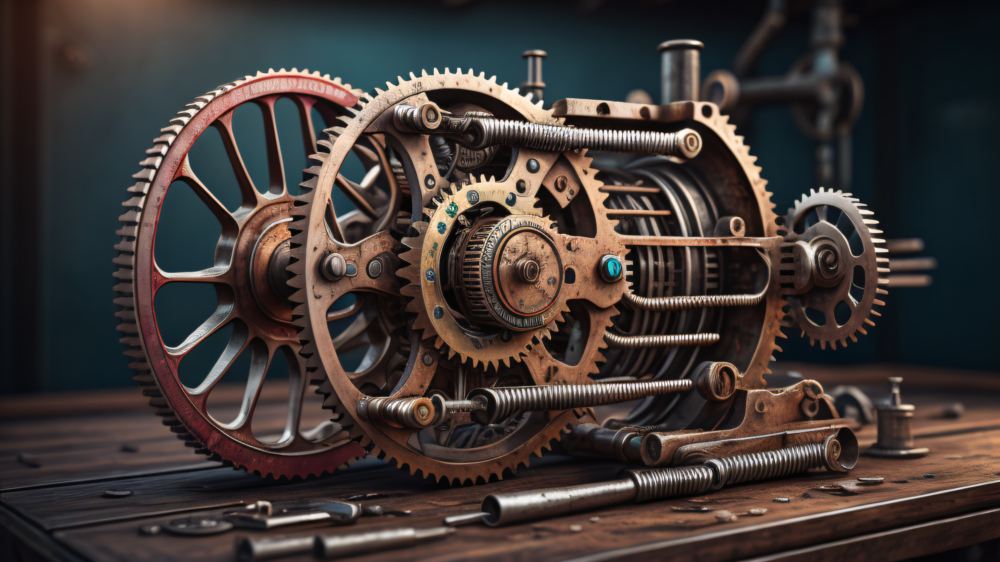

Информатор
Информатор
Техничке школе "Колубара"


Бравар-заваривач, планира, припрема и организује браварске радове. Контролише квалитет браварских радова према прописима и нормативима. Он посвећује пажњу очувању здравља, околине, и безбедности на раду при извођењу браварских и заваривачких радова.

Бравар-заваривач, планира, припрема и организује заваривачке радове. Заварује поступком електролучног (РЕЛ, МИГ, МАГ, ТИГ) и електроотпорног заваривања, врши заваривање поступком гасног заваривања, врши спајање делова меким и тврдим лемљењем и лепљењем, контролише квалитет рада при заваривању.

Бравар-заваривач израђује делове металних конструкција механичком обрадом, спаја делове металних конструкција раздвојивим и нераздвојивим спојевима, израђује и монтира металне конструкције и процесну опрему.

Техничар за комјутерско управљање (CNC) машина је занимање будућности. Повезује познавање опште машинских знања, са познавањем технологија обраде на компјутерски управљаним струговима и глодалицама.

Биће оспособљени за:
Правилну израду и коришћење техничке документације.
За процес организације рада на CNC машинама.
За примену алата и прибора у процесу производње.
Као и за управљање са још много процеса и вештина.

Уз примену знања и вештина рада на рачунару, научићете да направите програм по којем ће КУМ - компјутерски управљане машине (или цнц машине) производити тражени радни део. Зато се са правом каже, да техничар за комјутерско управљање (CNC) машина, чини да машта постане стварност.

То је нови образовни профил код нас у школи у трогодишњем трајању. Овај профил је био актуелан у прошлости само под називом аутомеханичар, али је данас подједнако актуелан и атрактиван.

Припрема ученике за рад са аутомобилима, камионима и другим моторним возилима. Учи се како функционише мотор, мењач, кочиони систем, електроника у возилу и многи други делови... Ученици се оспособљавају да сервисирају возило, раде дијагностику и отклањају неправилности на возилу.

Практичну наставу која је веома важна због запошљавања, због наставка школовања и нарочито због осамостаљивања у послу ученици обављају у школи и у сервисисма возила.